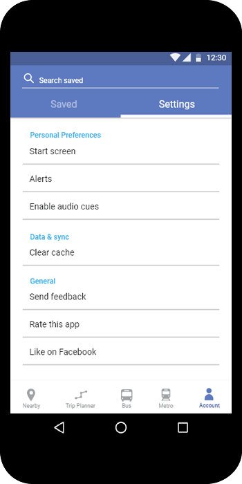

Veews (Work In Progress)
Overview
Veews is a work-in-progress iOS messaging application that’s being developed by a team of students from Howard University. The team consists of me and two graduate Computer Science students. Veews provides a tool for college students to connect with one another, to their campus, as well as to the world.
My Role
As the lead UI/UX designer of the project, I work closely with my teammates to research users, develop ideas and iterate UI/UX elements for the application.
The Process
Research
First, our team created storyboards and personas. During this step, we discovered great details about our users, and began to form solid ideas of how Veews could provide a useful and interesting way for college students to stay connected within and beyond the campus.
We continued by studying messaging apps widely used by college students like GroupMe, WhatsApp, and Messenger. We compare these apps' functions and objectives with those of Veews to determine what we could do to create a unique experience for Veews users.
Idea Development & Visualization
To begin, I sketched rough wireframes from the ideas formed by our user research. Below is one of the early wireframe versions.
After getting feedback from the team, I applied necessary changes to the wireframes, then moved on to create detailed mockups and rapid prototypes. Our team had several discussions on the mockups, as we discovered flaws of the designs and explored solutions to these problems. One major finding of these discussions was that the design did not carry elements that have potentials to attract our target audience – college students. I then started making iterations of the mockups until our team agreed upon one design.
As my teammates started implementing the initially approved design, we discovered shortcomings which result from multiple sources: bad readability, ineffective navigation, and design-engineering conflicts. Following these findings, I added changes to design elements and tested out new approaches for components that needed more drastic alteration.
Current Progress
As we are nearing our first in-house release date, I am currently iterating through the final design for this release. We are also getting ready to conduct in-depth user testing after the release.
DC Metro App Redesign
Overview
Being a frequent commuter on public transportation in Washington, DC, I often encounter difficulties tracking buses and trains, whereas the DC public transportation isn’t often reliable. To deal with this problem, I have been using the app DC Metro, which has proved to be quite effective. However, I have noticed a lot of shortcomings which significantly reduce the app’s usability. The same applies to quite a few people I know, who also commute within the DMV area. Hence, I came up with the idea of redesigning the app to solve those problems.
The Challenge
My goals for the project surround the aim to make the app DC Metro more useful, usable, and satisfying for the user. These goals include:
Create a better navigation.
Elevate the visual interface.
Make it faster and easier to use the DC metropolitan public transportation system.
My Role
Since this is a personal project for practicing purposes, I took on most of the major roles of the UX design process: researcher, visual designer, and prototyper.
The Process
Research
I tested the existing DC Metro app with 5 participants, who are frequent commuters of the DMV public transportation system. During the tests, I asked questions that gave me insights of what obstacles the participants faced while trying to navigate the DC transportation system using the existing app.
From all the data collected from the tests, I created a list of challenges the participants faced while using the existing DC Metro app. Then, I picked out the most common challenges to focus on solving:
Lengthy process of obtaining desired real-time tracking
Limitations of the trip planner feature
Sketches / Wireframes

Mockups & Prototype
I chose the best wireframes from all the sketches and began creating mockups. From the mockups, I created a rapid prototype.


User Testing & Iteration
Using the initial prototype, I tested with 5 participants, asking the same questions used during the preliminary research process, which focus on the obstacles the users may face while trying to complete a task related to commuting. From the answers, I was able to figure out the weaknesses of my solutions. Then, based on my findings, I reiterated on a few components of the prototype and finally reached a final version of the redesign.
The existing DC Metro App & the Redesign
The existing DC Metro App

The Redesign
The redesign features a clearner interface, which offers a more convenient navigation and hence faster ways for users to complete Metro-related tasks like tracking vehicles and searching for directions.
The "Nearby" tab shows all the bus and Metro stations around the user's location. Users can also search for places, stations and directions from this tab.

The "Bus" and "Metro" tabs give off details of bus and Metro stations. Users can seamlessly navigate from information about each station, route, and live updates.


From the "Account" tab, users can access their saved stations, route, and places. From there, users can navigate straight to the details of the saved items.

The redesign features a clearner interface, which offers a more convenient navigation and hence faster ways for users to complete Metro-related tasks like tracking vehicles and searching for directions.
The "Nearby" tab shows all the bus and Metro stations around the user's location. Users can also search for places, stations and directions from this tab.
The "Bus" and "Metro" tabs give off details of bus and Metro stations. Users can seamlessly navigate from information about each station, route, and live updates.
From the "Account" tab, users can access their saved stations, route, and places. From there, users can navigate straight to the details of the saved items.
T.A.G. Labs Website
Overview
T.A.G. (Technology and Gaming) Labs is a D.C. based nonprofit launched in 2013 by technology professionals with a passion for teaching young people coding and other S.T.E.A.M. related skills through the building of interactive gaming experiences.
My Role
I have been an intern at T.A.G. Labs since March 2017. Together with the Web Design/Development team, I have been working on the T.A.G. Labs website.
My usual tasks include adding new content to the website, which range across various forms such as interactive graphics and webpages.
While working on the website, I follow two main objectives:
To make the T.A.G. Labs website engaging to students and potential sponsors.
To keep the styles of the newly added content consistent with the original web theme in particular and with the T.A.G. Labs brand identity in general.
The Site view site
Some of the content I worked on:


Navient Path to Success
Overview
During my time interning as a web design intern at EverFi, Inc., I had the chance to work on the redesign for Navient’s online financial education tool - Navient Path to Success. This redesign was an effort to keep up with Navient’s rebranding in 2017.
The Process
I started the project by studying the new Navient brand identity, taking into account the crucial elements of the brand. Based on the findings, I created wireframes and mockups, which were then reviewed by my team members. After presenting the final mockups and getting approved by Navient, we started development. The final product was a website that features a straightforward, coherent introduction to Navient’s learning tool and a style that’s consistent with the Navient brand.
One Page Portfolio Template
Overview
This project was an attempt at crafting my first online portfolio. Building this website provided me with a chance to dive deeper into more web development skills and to improve my familiarity with web frameworks.
The Process
As a beginner at web development at the time, before actually starting the project, I spent time working on improving my HTML/CSS and JavaScript knowledge. I also looked at various frameworks, and decided to proceed with Bootstrap, as this popular framework seemed to serve most of the project’s objectives. After finishing the information architecture and wireframes for the website, I moved onto rough mockups, and then implementation. There were various obstacles during the development phase, but by attempting to overcome these difficulties, I was able to obtain lots of new knowledge and get much more comfortable with web development.
Information Architecture & Wireframes


Mockup
The Final Product view site
The project’s final outcome was an online portfolio that reflected my design principles at the time, when I was in my second year of college. The design was used for my portfolio website until I started implementing a rebranding project that included a new portfolio design.
Thi Nguyen Brand Identity
This project was initially created for a school project, and later developed into my current brand identity.
The Thi Nguyen identity has an emphasis on me, Thi Nguyen, being a creative, innovative and flexible individual – a versatile puzzle piece that could fit well into a team.
The Logo
The logo for the Thi Nguyen brand shows the letter t in lowercase, which serves as my first initial while also has the form of a puzzle piece.
Style Guide
Axiom Brand Identity & Stationery
Overview
For a school project, I created the brand identity and stationery system for Axiom, a pseudo publishing firm. The concept of the Axiom brand surrounds the idea that Axiom books shed light on the truths of life. Hence, elements echoing the shape and feel of sunrays are present throughout the brand identity.
The Logo
The Axiom logo follows the sun ray concept of the brand. The graphic mark show three sunrays, all of which form a big area of sunlight.
The Stationery System

Style Guide

N Logo
This is my previous personal branding logo, which showcases the letter 'N,' my last initial. The logo, in addition to representing my last name, also tells a story about me: an artist who embraces minimalism, grids, and processes in her practice.
Howard University Flyers
A selective colection of flyers I designed for various events on Howard University campus.


Hate, Love
Acrylic on canvas, 2016.
If Only
Taken during the snowstorm Snowzilla. Phone photography. Washington, DC, 2016.
Past Midnight on Georgia Ave
Acrylic on canvas, 2016.
Elm St.
Phone photography. Washington, DC, 2016.
Rain on the Hilltop
Phone photography. Washington, DC, 2016.
Sunset Waves
Phone photography. Washington, DC, 2016.
Talk
Phone photography. Washington, DC, 2015.
Fear
'Lost in 19' Series. Minneapolis, 2014
Tell Me the Way Home
'Lost in 19' Series. Minneapolis, 2014
Shooting Stars
Los Angeles, 2014
Twinkle Duluth
2014
Up
Water color, 2015
Forgotten Season
"Water color, 2014. Honorable mention in Painting category, Howard University 85th Annual Art Student Exhibition
Life Passes
Minneapolis, 2014.